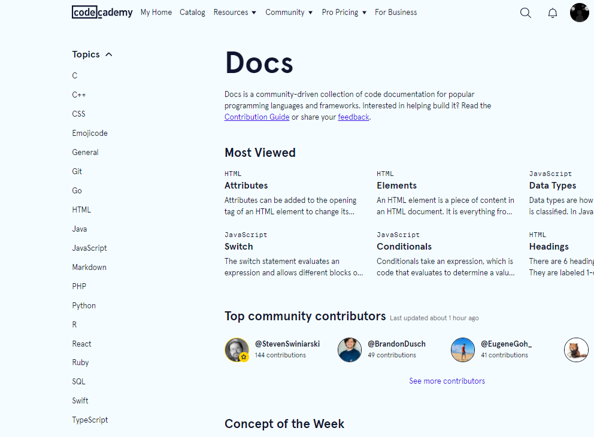

Pour poursuivre mes études dans l'informatique et donc le développement , il faut que j'apprenne à manier différents langage de programmation comme Python , HTML , CSS , JavaScript (que j'aurais
pu utilisé pour ce site ) , VScript , MySQL ou encore du C++ , je suis donc actuellement entrain d'apprendre ou est déjà appris ces différents langages et voici la liste actuellement :
-Python
-HTML
-CSS
-JavaScript
-MySQL
Il me reste encore donc à finir mes apprentissages en cours et à apprendre le VScript et le CSS ( et refaire du MySQL parce que ça fait longtemps que je n'en ai pas fait ) .
